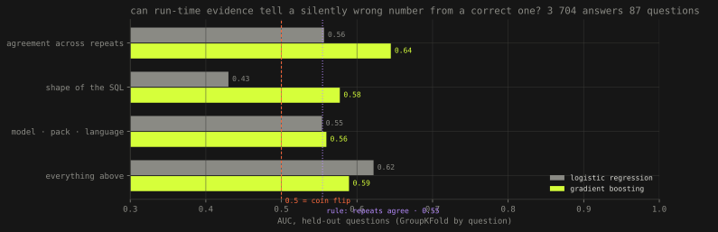
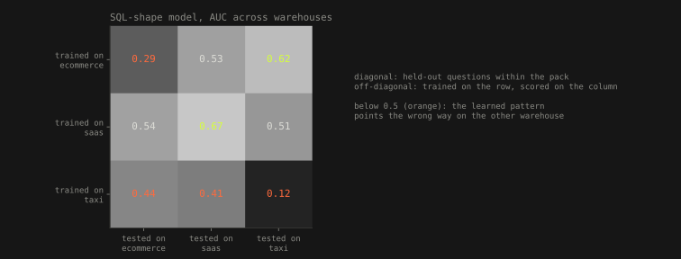

Claims, checked · machine learning · 15 September 2026 · on the Quaesitor runs
Can a wrong number be seen coming?
Quaesitor measured how often an AI assistant over a data warehouse returns a number that runs, looks plausible and is wrong: 3 839 times in 5 794 answers. This text asks the question a trust layer would love answered: is there anything visible at run time, before anyone knows the true answer, that tells the wrong numbers from the right ones? Agreement across repeats, the shape of the SQL, the model, the language. Everything was tried. The honest answer is no, and the reasons are more useful than a yes would have been.
- answers
- 5 794 125 runs · 15 languages · 8 packs · Quaesitor harness
- trained on
- 3 704 numeric answers, 87 questions · 81.8 % silently wrong
- best held-out AUC
- 0.64 agreement features, gradient boosting · 0.5 is a coin
- self-consistency
- 21 % correct when all repeats agree · base rate 18 %
The question, and why it matters
An assistant that answers business questions with SQL fails in a particular way: the query runs, a number comes back, the number is wrong, and nothing says so. Quaesitor's harness plants the reasons in a warehouse (duplicated SCD rows, soft deletes, mixed currencies, a timezone, a wrong denominator) and asks questions whose true answer is known, three times each, in fifteen languages, of several models1. The result over 5 794 answers is a silent-failure rate that ranges from 56 % to 92 % depending on the model and the pack. The trust layer I run at work does not try to predict that; it cross-checks every figure against certified dashboards, which is expensive and needs the dashboards to exist. So the question is worth a day: if a detector could flag the wrong numbers from what is visible while the answer is being produced, the cross-check could be reserved for the flagged ones.
What a detector is allowed to see
Only what exists at run time, with no access to the true answer. Three groups of features. Agreement across the three repeats of the same question: how many distinct SQL statements the model wrote, how many distinct numbers came back, whether this answer is the majority value, whether all repeats agree. This is the popular self-consistency idea: ask several times and trust the consensus. The shape of the SQL: its length, joins, tables, WHERE terms, boolean flag filters, DISTINCT, GROUP BY, date arithmetic, casts and coalesces, subqueries, NULL checks. The run: which model alias, which question pack, which language. The type of trap planted in the question is the question's label and never enters a model2.
Two safeguards on the evaluation. Cross-validation is grouped by question, so all fifteen languages of Q03 are held out together and a model cannot learn that "Q03 is the SCD one"; and the abstention pack is left out of training, because there every numeric answer is wrong by construction (the right answer is to decline), which would turn "returned a number" into the label and inflate everything. Before it was left out, the SQL-shape model scored 0.81. After, 0.58. That correction is the first result2.
Nothing visible predicts it

The best any model reaches on held-out questions is an AUC of 0.64, from gradient boosting on the agreement features; everything else sits between 0.43 and 0.62, and a logistic regression on the shape of the SQL scores below a coin flip, meaning the shapes that go with wrong answers on some questions go with right answers on others. Used as a filter at a 50 % threshold, the best model forwards 3 % of answers with 86 % of them correct, which is a filter that keeps almost nothing. The run features, model, pack and language, predict nothing at all (0.55–0.56), which is its own finding: the wrong answers are not a property of one model or one language2.
Self-consistency does not work here. When all three repeats return the same number, that number is correct 21 % of the time, against a base rate of 18 %. When the three repeats wrote three different SQL statements and still agreed on the number, which sounds like the strongest possible evidence, it is correct 20 % of the time. The model is not unstable; it is consistently wrong in the same way, ignoring the SCD duplicates on every attempt, counting the soft-deleted rows every time, and consensus among three copies of the same blind spot is not evidence. This is the mechanism behind the headline of the Quaesitor texts, that trust grows faster than accuracy: the assistant is confident and stable exactly when it is wrong in a way it cannot see1, 2.
What a wrong query looks like does not travel

Trained on the e-commerce warehouse, the SQL-shape model scores 0.53 on the SaaS warehouse and 0.62 on the taxi one; trained on taxi it scores 0.41 on SaaS and 0.44 on e-commerce, below chance. Even within a pack, held-out questions score 0.29 (e-commerce) and 0.12 (taxi): a query shape that means "wrong" for one question means "right" for the next. What the model can learn is what the traps of a particular warehouse look like, which is the same as memorising the questions, and that is exactly what a detector deployed on new questions would not have2.
What this means for the trust layer
Three practical conclusions. First, run-time signals cannot replace the cross-check: a silently wrong number is by definition one that leaves no trace in how it was produced, and the data say so with an AUC of 0.64 at best. Second, self-consistency, the cheapest and most recommended safeguard, buys three percentage points here, and it buys them at three times the cost; the honest version of "ask it twice" is "it will tell you the same wrong thing twice". Third, the thing that works is the thing that was already built: a catalogue of verified figures the assistant must reconcile against, and a protocol that makes reconciliation a measured obligation rather than a hope. The detector was worth building because it says, with numbers, why the expensive thing is necessary3.
Limits. The answers come from one harness with planted traps, not from production questions; production wrong answers may be easier or harder. Features are hand-written from the SQL text; an embedding of the query might do better, though the transfer result suggests it would learn the same thing, the warehouse. The label is binary, and the size of the error (a 6 % miss and a 2 000 % miss are both "silently wrong") is left for later. The code, the parsed answers and every number here are in the harness repository, with tests2.
References
- Šandová, B. (2026): Quaesitor, the three texts: the harness, the packs, the classification of answers (correct, silently wrong, implausible, refused) and the finding that trust grows faster than accuracy. Runs: quaesitor repository,
method/outputs/agent_*.md, 125 reports. - Šandová, B. (2026):
method/src/detector.pyin the same repository: parser over the run reports, run-time features, GroupKFold by question, pack-to-pack transfer; output detector.json, tests intests/test_detector.py. Exclusions: the abstention pack (no contrast) and two packs under 100 numeric answers. 5 794 answers parsed, 3 704 trained on. - Šandová, B. (2026): The platform is code. So is the trust., section 7: the LLM assistant's trust layer, catalogue-first lookup and protocol compliance as an evaluation metric.